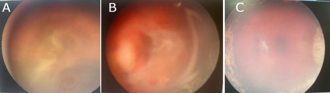
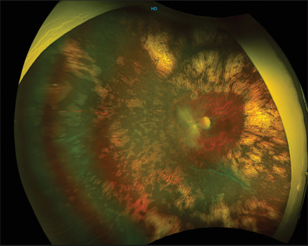
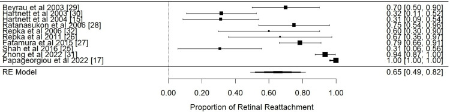
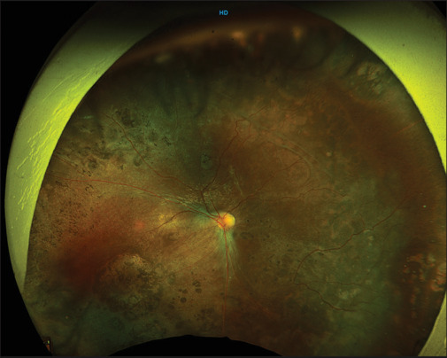
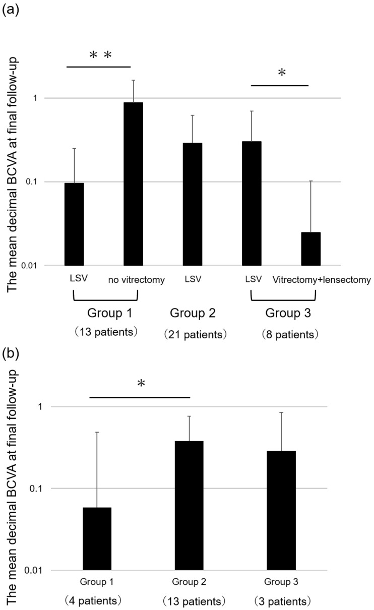

1406 — Tái bong & co kéo sau mổ ROP giai đoạn 4–5: phân biệt co kéo – rách mới – xuất tiết, khi nào mổ lại và chọn đường nào / Recurrent retinal detachment and persistent traction after surgery for stage 4–5 retinopathy of prematurity
Tags: pattern:tai-bong pattern:co-keo pattern:rop vung:vong-mac vung:dich-kinh score:ICROP protocol:phau-thuat-rop protocol:sieu-am-B-scan incidentaloma:rop
Mức chắc chắn (certainty): tổng hợp y văn (literature synthesis) — tự biên từ 1 thuần tập dài hạn 84 mắt/60 trẻ, theo dõi trung bình 9,27 năm (PMC12659832), 1 thuần tập 23 mắt sau cắt dịch kính chừa thể thủy tinh (LSV) theo dõi 7,36 năm (PMC11834901), 1 thuần tập 31 mắt cắt dịch kính stage 4–5 (PMC10759917), 1 tổng quan hệ thống 10 nghiên cứu/1.179 mắt (PMC11267137), 1 phân tích gộp đai củng mạc 10 nghiên cứu/214 mắt (PMC11743321) và 1 nghiên cứu thị lực – khúc xạ sau LSV (PMC9916407). Không có RCT; phần chưa có số liệu ghi rõ "chưa rõ".
Câu chốt: sau mổ ROP, "thành công" không phải một trạng thái mà là một quá trình suy giảm: thành công giải phẫu 94,2% lúc 6 tuần → 88,2% sau ~9 năm ở stage 4A, và 63,6% → 30,3% ở stage 5 — nghĩa là 1/3 mắt stage 5 "đã áp" sẽ bong lại. Ba câu quyết định mổ lại: (1) co kéo còn tiến triển tới hoàng điểm không? (2) có rách mới (RRD) hay chỉ co kéo? (3) mắt còn tiềm năng thị giác và tiền phòng/ nhãn áp còn dùng được không?
1. Tổng quan bệnh học – cơ chế hình ảnh
- Vì sao bong lại (pathophysiology) — 4 cơ chế chồng lấn:
- Co kéo tồn dư (residual traction): màng fibrovascular sau thể thủy tinh không lấy hết (đặc biệt khi mổ qua đồng tử hẹp ở stage 5) → lực kéo tiếp tục.
- Võng mạc không "lớn" theo nhãn cầu: võng mạc là mô thần kinh không tăng sinh theo thể tích nhãn cầu; khi nhãn cầu lớn dần, võng mạc chịu lực căng thường trực, và chỗ yếu nhất — hoàng điểm — dễ rách. Đây là lý do tái bong xuất hiện muộn, nhiều năm sau mổ, không chỉ trong 6 tuần đầu (PMC12659832).
- Rách mới (rhegmatogenous — RRD): rách trong mổ hoặc sau mổ; trong loạt 84 mắt có rách trong mổ 4 mắt, thủng hoàng điểm (macular hole) 1 mắt, chạm thể thủy tinh 3 mắt khi định làm LSV (PMC12659832). Rách làm tiên lượng xấu rõ rệt (OR 0,21 cho thành công giải phẫu, PMC11267137).
- Xuất tiết/viêm: laser–cryo quá mức, bong thanh mạc, tăng áp lực tĩnh mạch sau đai — bong dịch chuyển theo tư thế, không có lỗ.
- Vì sao "áp võng mạc" chưa đủ để yên tâm: trong loạt 84 mắt, thành công type 1 (áp toàn bộ, có thể còn nếp gấp) bền hơn nhiều so với type 2 (áp một phần, hậu cực áp): chuyển thành thất bại 1/19 (4A), 1/6 (4B), 1/8 (stage 5) với type 1, nhưng 1/13 (4A), 1/8 (4B) và 10/13 (stage 5) với type 2 (PMC12659832). Type 2 ở stage 5 gần như là "bong lại chắc chắn".
- Ngưỡng định lượng nằm lòng:
- Thành công giải phẫu theo giai đoạn (định nghĩa: 4A = áp hoàn toàn, hoàng điểm không/ít biến dạng; 4B = áp hoàn toàn hoặc bong ngoại vi tồn dư không tới hoàng điểm; 5 = bất kỳ phần nào của hậu cực áp):
- 84 mắt, theo dõi 9,27 năm: 6 tuần — 94,2% (4A) · 82,35% (4B) · 63,6% (stage 5); cuối theo dõi — 88,2% · 70,59% · 30,3% (PMC12659832).
- 31 mắt: 90,9% (4A) · 57,1% (4B) · 33,3% (5A), chung 64,5% (PMC10759917).
- Đai củng mạc, gộp 10 nghiên cứu/214 mắt: áp võng mạc 65% (95% CI 49–82), I² = 95,88%; thị lực thuận lợi 41% (29–52); tuổi sau sinh hiệu chỉnh lúc mổ 42,5 tuần, theo dõi trung bình 28,3 tháng (PMC11743321).
- Tỉ lệ phải mổ lại: 16/70 mắt (22,9%) cần can thiệp thêm — 19,4% (4A), 22,2% (4B), 50% (stage 5); 7/88 mắt (8%) cần mổ lần hai (PMC11267137). Loạt 31 mắt: cắt dịch kính lần hai 9,7% (PMC10759917). Loạt 84 mắt: 10 mắt mổ lại võng mạc (2 mắt có dầu silicone), 17 mắt tháo/cắt đai, 4 mắt mổ glaucoma, 2 mắt lấy thể thủy tinh (PMC12659832).
- Thời điểm mổ lại: trung bình 6,4 tuần khi do xuất huyết dịch kính sau mổ, và 43,5 tuần khi là mổ theo kế hoạch nhiều thì để tăng diện tích áp (dẫn qua PMC11267137). Đây là lý do lịch theo dõi phải kéo dài ≥ 1 năm, không dừng ở mốc 6 tuần.
- Yếu tố tiên lượng (OR, PMC11267137): stage 4 OR 5,8; đã điều trị trước (laser/anti-VEGF) OR 2,3; giữ thể thủy tinh (LSV) OR 7; 25G OR 1,7; có rách võng mạc OR 0,21 (bất lợi).
- Hậu quả chức năng: sau LSV stage 4 theo dõi 7,36 năm — võng mạc áp 82,61%, thể thủy tinh còn trong 69,57%, thị lực ≥ 6/24 ở 34,78%, ≥ 1/60 ở 69,56%, khúc xạ cầu tương đương −8,50 ± 6,39 D, cận thị cao ≥ 7 D ở 43,47%, mù hai mắt 18,75% (PMC11834901). Thị lực tốt nhất đạt được: 6/9 (4A), 6/18 (4B), 6/60 (stage 5) (PMC12659832).
- Thành công giải phẫu theo giai đoạn (định nghĩa: 4A = áp hoàn toàn, hoàng điểm không/ít biến dạng; 4B = áp hoàn toàn hoặc bong ngoại vi tồn dư không tới hoàng điểm; 5 = bất kỳ phần nào của hậu cực áp):
- Vai trò của hình ảnh học (khi nào chụp gì):
- Siêu âm B-scan: bắt buộc khi môi trường đục (xuất huyết dịch kính, màng sau thể thủy tinh, đục thể thủy tinh) — trả lời áp/bong, phễu mở hay đóng, màng co kéo bám đĩa thị hay không. Dấu hiệu chốt: màng dính đĩa thị + di động theo mắt (aftermovement) = võng mạc; màng không dính đĩa thị = màng dịch kính, KHÔNG mổ.
- Chụp đáy mắt góc rộng (RetCam/UWF): theo dõi co kéo tồn dư, kéo hoàng điểm (macular drag), tân mạch tái hoạt; ảnh chuỗi theo thời gian quan trọng hơn 1 ảnh đơn.
- OCT cầm tay (handheld OCT): phân biệt bong võng mạc thật vs ly thượng võng mạc (retinoschisis) và nếp gấp/co kéo hoàng điểm khi đáy mắt nhìn được; hữu ích khi B-scan không phân định được.
- FA (fluorescein angiography): khi nghi tái hoạt tân mạch ở vùng ngoại vi chưa laser hết — quyết định laser bổ sung thay vì mổ lại.
2. Mẫu hình + chẩn đoán phân biệt theo "kiểu bong lại" (gamut)
- Nhóm 1 — co kéo tồn dư tiến triển (tractional): bong hình vòm/ phễu, không di động, màng bám đĩa thị, không có lỗ; thường sau mổ stage 4B/5, trong vài tuần đến vài tháng; chỉ định mổ lại khi co kéo tiến tới hoàng điểm hoặc làm mất phần hậu cực còn lại.
- Nhóm 2 — rách mới/RRD trên nền ROP: bong di động, gợn sóng, có lỗ (thường ở hoàng điểm hoặc chu vi võng mạc mỏng), xuất hiện muộn (nhiều tháng–nhiều năm) khi nhãn cầu lớn; tiên lượng kém nhất (OR 0,21) — vẫn phải mổ nhưng tư vấn trung thực.
- Nhóm 3 — bong xuất tiết: dịch chuyển theo tư thế, không lỗ, kèm viêm/bỏng lạnh quá mức; không mổ ngay — điều trị nguyên nhân, theo dõi.
- Nhóm 4 — co kéo nhưng KHÔNG bong (macular drag/fold): võng mạc áp, mạch máu duỗi thẳng, hoàng điểm lệch — theo dõi, không mổ (Hình 3).
- Nhóm 5 — bong "giả" do đai củng mạc: gờ đai + bong thanh mạc (choroidal detachment) hình vòm trơn, không qua hoàng điểm; không mổ, theo dõi — đai thường được tháo/cắt ở ~1 tuổi (PMC12659832).
- Nhóm 6 — bong do nguyên nhân khác: bong thanh mạc sau tháo dầu, xuất huyết dưới võng mạc, glaucoma ác tính (nhãn áp thấp, tiền phòng nông) — không phải chỉ định cắt dịch kính.
3. Bảng so sánh phân biệt (ma trận đối chiếu)
| Thực thể (entity) | Hình ảnh điển hình (B-scan / đáy mắt / OCT) | Chốt vào (rule-in) | Chốt loại (rule-out) | Gợi ý xác nhận |
|---|---|---|---|---|
| Co kéo tồn dư (tractional) | B-scan: màng dày bám đĩa thị, bong hình phễu/vòm, không di động; đáy mắt: màng trắng xám co rút | Màng dính đĩa thị + co kéo tiến tới hoàng điểm trên 2 lần khám | Không có màng bám đĩa thị, bong di động → nghĩ RRD/xuất tiết | So ảnh 2–4 tuần; B-scan lặp; cân nhắc OCT |
| RRD do rách mới | B-scan: bong di động, gợn sóng, có thể thấy lỗ; đáy mắt: lỗ hoàng điểm/chu vi, thường muộn | Thấy lỗ + bong di động + dịch dưới võng mạc lan | Bong cố định, không lỗ, màng bám đĩa → co kéo | Soi đáy mắt giãn đồng tử ± FA; B-scan khi đục |
| Bong xuất tiết | Bong trơn, dịch chuyển theo tư thế, không lỗ, kèm viêm/laser–cryo rộng | Dịch đổi vị trí khi nghiêng đầu/đổi tư thế | Bong cố định + màng co kéo → không phải xuất tiết | Đổi tư thế trên B-scan; đáp ứng corticoid |
| Macular drag (áp, không bong) | Đáy mắt: mạch máu duỗi thẳng, hoàng điểm lệch về phía màng, võng mạc áp | Võng mạc áp toàn bộ + hoàng điểm lệch, thị lực ổn định | Bong dưới hoàng điểm → không phải drag đơn thuần | Ảnh UWF chuỗi; OCT cầm tay |
| Bong thanh mạc do đai | Gờ đai + vòm trơn không qua hoàng điểm; B-scan: dịch dưới thanh mạc, không di động cùng màng | Có gờ đai + vòm trơn ngoại vi + nhãn áp bình thường/thấp | Màng bám đĩa thị + bong trung tâm → bong thật | B-scan qua gờ đai; theo dõi 2–4 tuần |
| Glaucoma sau mổ (bẫy) | Giác mạc mờ, nhãn áp cao, tiền phòng nông, đau, chảy nước mắt | Nhãn áp cao + giác mạc mờ ở trẻ sau mổ ROP | Nhãn áp bình thường + đáy mắt rõ | Đo nhãn áp mỗi lần khám (glaucoma 11/84 mắt, 22,6% loạt 31 mắt) |

Hình 1 — (A) trước mổ: xuất huyết dịch kính + bong co kéo bắt hoàng điểm (stage 4B); (B) sau cắt dịch kính lần 1: còn màng sau và co kéo tồn dư — đây là hình ảnh "thất bại một phần" điển hình; (C) sau mổ lại lần 2: võng mạc áp, không còn co kéo. Nguồn: Bahrani HM et al., Clin Ophthalmol 2023 (PMC10759917) Fig. 4, CC BY-NC 3.0.
Hình 2 — mắt trái sau LSV: co kéo phía mũi tới đĩa thị, hoàng điểm bị kéo về phía đĩa, võng mạc áp; laser bao quanh tạo teo sắc tố rộng. Đây là "co kéo tồn dư không bong" — theo dõi, không mổ. Nguồn: Gopal L et al., Indian J Ophthalmol 2025 (PMC11834901) Fig. 6, CC BY-NC-SA 4.0.4. Protocol theo dõi + tiêu chuẩn mổ lại + chọn đường mổ
- Lịch theo dõi sau mổ (tối thiểu): ngày 1, tuần 1, tuần 4–6 (mốc đánh giá "thành công sớm"), rồi mỗi 1–3 tháng trong năm đầu, mỗi 3–6 tháng đến 3 tuổi, hằng năm đến ≥ 10 tuổi — vì tái bong có thể xuất hiện sau nhiều năm (84 mắt: 6 tuần 94,2% → cuối 88,2% ở 4A; 63,6% → 30,3% ở stage 5).
- Mỗi lần khám phải có: nhãn áp (glaucoma 11/84, 22,6% loạt 31 mắt), khúc xạ (cận thị cao 43,47%), soi đáy mắt giãn đồng tử (hoặc B-scan nếu đục), đánh giá thị lực theo tuổi (fix–follow, Teller, Snellen).
- Tiêu chuẩn mổ lại (đủ 1 trong các điều kiện):
- Co kéo tiến triển tới hoàng điểm hoặc bong mới bắt hoàng điểm trên 2 lần khám cách 2–4 tuần.
- RRD có lỗ (kể cả lỗ hoàng điểm) — mổ sớm, không chờ.
- Xuất huyết dịch kính dai dẳng + bong không tự cải thiện sau 6–8 tuần.
- Glaucoma không kiểm soát cần can thiệp (đồng thời hoặc riêng).
- Chọn đường mổ lại:
- Còn thể thủy tinh + co kéo khu trú: LSV lần hai (giữ thể thủy tinh — OR 7 cho thành công, PMC11267137); dùng 25G (OR 1,7).
- Màng dày lan rộng, đồng tử hẹp, đục thể thủy tinh, stage 5: cắt thể thủy tinh + cắt dịch kính (LV), gỡ màng tới đĩa thị.
- Co kéo ngoại vi ưu thế, chưa bong trung tâm: đai củng mạc (gộp 65% áp) — nhớ tháo/cắt đai ~1 tuổi và tư vấn cận thị do đai.
- RRD phức tạp/đã thất bại 2 lần: dầu silicone (trong loạt 84 mắt chỉ 2 mắt cần dầu; đều đã lấy dầu sau đó).
- Không mổ khi: co kéo ổn định không tới hoàng điểm, bong thanh mạc do đai, mắt không còn tiềm năng thị giác + đau (cân nhắc giảm đau/mổ bỏ mắt thay vì mổ lại).
- Tư vấn gia đình (bắt buộc ghi hồ sơ): thành công giải phẫu không đồng nghĩa thị lực tốt — chỉ 34,78% đạt ≥ 6/24 sau LSV stage 4; 18,75% mù hai mắt; khúc xạ −8,50 D trung bình; cần kính, theo dõi nhược thị, và lịch hẹn dài hạn.
flowchart TD
A[Trẻ sau mổ ROP 4-5: đáy mắt không rõ hoặc nghi bong lại] --> B[Siêu âm B-scan + soi đáy mắt giãn đồng tử]
B --> C{Màng bám đĩa thị + bong cố định?}
C -->|Không| D{Bong di động + thấy lỗ?}
D -->|Có| E[RRD: mổ sớm<br/>LSV hoặc LV + gỡ màng]
D -->|Không| F{Dịch đổi theo tư thế?}
F -->|Có| G[Xuất tiết: điều trị nguyên nhân<br/>theo dõi 2-4 tuần]
F -->|Không| H[Co kéo không bong / bong thanh mạc do đai<br/>theo dõi, KHÔNG mổ]
C -->|Có| I{Co kéo tới hoàng điểm<br/>hoặc mất hậu cực?}
I -->|Không| H
I -->|Có| J{Còn thể thủy tinh?}
J -->|Có| K[LSV lần hai 25G + gỡ màng]
J -->|Không| L[LV + gỡ màng tới đĩa thị]
K --> M{Áp sau 4-6 tuần?}
L --> M
M -->|Có| N[Theo dõi dài hạn: nhãn áp, khúc xạ, thị lực]
M -->|Không| O[Cân nhắc dầu silicone / ngừng can thiệp<br/>tư vấn tiên lượng]

*Hình 4 — gộp 10 nghiên cứu/214 mắt: áp võng mạc sau đai củng mạc ở ROP tiến triển 65% (95% CI 49–82), I² = 95,88% (dao động 30%–100% giữa các loạt). Nguồn: Kottaridou E et al., Cureus 2024 (PMC11743321) Fig. 2, CC BY.*5. Biến thể bình thường và cạm bẫy
- Cạm bẫy 1 — "áp võng mạc ở 6 tuần = thành công": sai. Ở stage 5, 63,6% lúc 6 tuần rơi còn 30,3% về lâu dài; type 2 success (áp một phần) là dấu hiệu báo động, không phải kết quả.
- Cạm bẫy 2 — mổ lại vì "còn màng": co kéo tồn dư ổn định, không tới hoàng điểm (Hình 2) không phải chỉ định — mổ thêm ở mắt non tháng làm tăng glaucoma, đục thể thủy tinh, mù.
- Cạm bẫy 3 — B-scan đọc màng dịch kính dày thành "võng mạc bong": dùng aftermovement và tìm điểm bám đĩa thị; nếu không chắc → OCT cầm tay hoặc soi đáy mắt khi đục đã tan.
- Cạm bẫy 4 — bỏ sót glaucoma: 11/84 mắt (loạt dài hạn) và 22,6% (loạt 31 mắt) bị glaucoma; trẻ không kêu đau, giác mạc mờ dễ bị cho là "bong tái phát". Đo nhãn áp mọi lần khám.
- Cạm bẫy 5 — nhầm cận thị do đai với "bong lại": đai gây cận thị −6 D và gờ đai; ảnh B-scan qua gờ đai dễ tạo bóng giả. So 2 bình diện, đọc cùng ảnh đáy mắt.
- Cạm bẫy 6 — tư vấn "mổ là sẽ thấy": thành công giải phẫu ≠ thị lực; 34,78% đạt ≥ 6/24 sau LSV stage 4, 18,75% mù hai mắt. Nói rõ khả năng phải mổ lại 8–23% và cần theo dõi ≥ 10 năm.
- Biến thể bình thường: nếp gấp võng mạc nhẹ quanh đĩa thị sau mổ, teo sắc tố do laser (Hình 2), đục thể thủy tinh nhẹ tiến triển, lác/rung giật — không phải tái bong.
6. Tự lượng giá — Blind Quiz
Ca 1 — Trẻ 3 tháng tuổi (sinh 27 tuần), sau cắt dịch kính stage 4B 4 tuần: đáy mắt mờ, B-scan nghi bong. Nhìn Hình 1, mô tả A→B→C.
- Gợi ý: (B) là ảnh sau lần mổ đầu tiên.
- Câu hỏi: (B) cho thấy gì? Đây là "thành công" hay "thất bại một phần"? Khi nào mổ lại?
Bấm để hiện đáp án (findings + chẩn đoán)
- (A) xuất huyết dịch kính + bong co kéo bắt hoàng điểm (stage 4B). (B) sau mổ lần 1: màng sau và co kéo tồn dư — võng mạc chưa áp hoàn toàn. (C) sau mổ lại lần 2: áp, không còn co kéo.
- Chẩn đoán: co kéo tồn dư — không phải "thành công"; mổ lại khi co kéo tiến tới hoàng điểm hoặc bong mới bắt hoàng điểm trên 2 lần khám cách 2–4 tuần.
- Nguồn ảnh: Bahrani HM et al., Clin Ophthalmol 2023, PMC10759917 Fig. 4, CC BY-NC 3.0.
Ca 2 — Trẻ 6 tuổi, ROP stage 4A đã LSV 5 năm trước, thị lực 6/60, võng mạc áp. Nhìn Hình 2 và Hình 3, có mổ không?

- Gợi ý: cả hai ảnh đều võng mạc áp.
- Câu hỏi: gọi tên dấu hiệu? Vì sao không mổ? Cần theo dõi gì?
Bấm để hiện đáp án
- Co kéo tồn dư không bong + macular drag: mạch máu duỗi thẳng, hoàng điểm lệch về phía màng, võng mạc áp, laser teo sắc tố rộng.
- Không mổ: mổ thêm không cải thiện thị lực đã mất do hoàng điểm lệch + nhược thị, nhưng tăng nguy cơ glaucoma/đục thể thủy tinh/bong thật. Theo dõi nhãn áp, khúc xạ (cận thị cao 43,47%), thị lực, ảnh UWF mỗi 6–12 tháng.
- Bối cảnh số liệu: sau LSV stage 4 theo dõi 7,36 năm, 82,61% áp, 69,57% còn thể thủy tinh, 34,78% ≥ 6/24.
- Nguồn ảnh: Gopal L et al., Indian J Ophthalmol 2025, PMC11834901 Fig. 6 và Fig. 3, CC BY-NC-SA 4.0.
Ca 3 — Hội chẩn: "Đai củng mạc cho stage 4A thì bao nhiêu % áp? Có nên chọn đai thay cắt dịch kính?" Nhìn Hình 4 và Hình 5.

- Gợi ý: Hình 5 so mắt được LSV với mắt còn lại (nhóm 1), và LSV với cắt thể thủy tinh (nhóm 3).
- Câu hỏi: đai củng mạc đạt bao nhiêu %? Vì sao giữ thể thủy tinh lại quan trọng tới vậy?
Bấm để hiện đáp án
- Đai củng mạc: gộp 10 nghiên cứu/214 mắt, áp 65% (49–82), I² = 95,88%; thị lực thuận lợi 41% (29–52) — tức 1/3 mắt vẫn bong và hơn một nửa thị lực kém.
- Giữ thể thủy tinh: Hình 5a — nhóm 1, LSV 0,1 so với mắt không mổ 0,9 (p < 0,001); nhóm 3, LSV 0,3 so với cắt thể thủy tinh + cắt dịch kính 0,02 (p < 0,05). Trong tổng quan hệ thống: LSV OR 7 cho thành công giải phẫu.
- Kết luận: đai hợp khi co kéo ngoại vi, chưa bong trung tâm; LSV khi cần gỡ màng sau — nhưng cả hai đều là "kiểm soát", không phải "chữa khỏi": phải tư vấn mổ lại 8–23%, theo dõi ≥ 10 năm.
- Nguồn ảnh: Kottaridou E et al., Cureus 2024, PMC11743321 Fig. 2, CC BY; Iwahashi C et al., Int J Mol Sci 2023, PMC9916407 Fig. 1, CC BY.
Bài liên quan chéo
- 1403 – Phẫu thuật ROP giai đoạn 4–5: đai củng mạc vs LSV vs LV (mổ lần đầu, chọn đường)
- 456 – Bệnh võng mạc trẻ sinh non: zone–stage–plus & AP-ROP (phân loại, sàng lọc)
- 458 – Di chứng & theo dõi dài hạn sau ROP (cận thị, lác, nhược thị)
- 1402 – Bong võng mạc sau viêm nội nhãn (màng co kéo vs lỗ hoại tử, dầu silicone)
Ảnh
- 5 ảnh lấy từ Europe PMC/PMC bản open access, giữ nguyên bản — không crop, không ghép (2 ảnh CC BY-NC-SA của PMC11834901 đặc biệt không được chỉnh sửa); nguồn – giấy phép từng file trong
images/CREDITS.md. - Tên file:
1406_tai-bong_<nội dung>_<loại>_PMC<ID>-Fig<k>.jpg.
Không dùng để chẩn đoán độc lập khi chưa có người hướng dẫn.